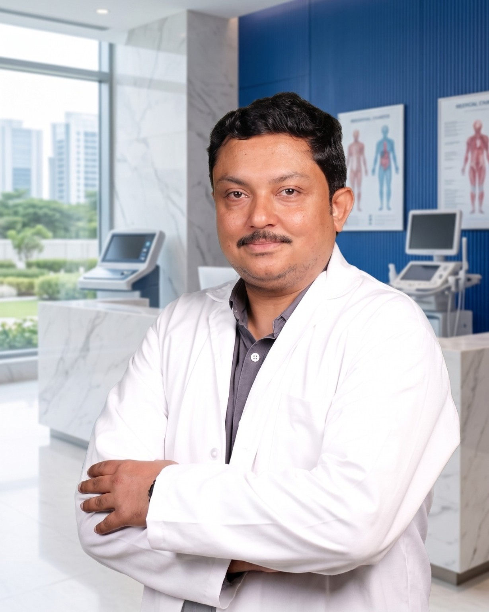

✦
Experienced surgeon
Dr. Uday Ravi is a consultant General, Laser, Laparoscopic, Robotic and Bariatric surgeon practising in Bangalore for 15+ years.*
Get a personalised consultation to understand circumcision treatment options, including laser and stapler techniques, suitability, recovery and the next steps for your individual condition.

Discuss your condition with Dr. Uday Ravi and receive clinically appropriate guidance.
Dr. Uday Ravi's official circumcision page describes his experience with circumcision across age groups and highlights a patient-focused, minimally invasive surgical approach.
Dr. Uday Ravi is a consultant General, Laser, Laparoscopic, Robotic and Bariatric surgeon practising in Bangalore for 15+ years.*
The practice lists laser and stapler circumcision options. The appropriate technique should be selected after clinical assessment.
Understand the procedure, preparation, recovery and follow-up based on your individual condition and medical history.
Use a confidential consultation to discuss intimate symptoms rather than sharing sensitive medical details publicly.
Dr. Ravi's practice focuses on advanced laser and minimally invasive techniques designed around recovery and patient comfort.
Get an appropriate treatment estimate after evaluation instead of relying on a generic online price.
The right technique depends on your clinical situation. Your surgeon should assess you and explain the benefits, limitations and risks before treatment.
Share your concern with the care team and arrange your consultation.
Understand diagnosis, suitability and available treatment options.
Receive instructions about preparation, recovery and aftercare.
Continue with clinician-advised aftercare and scheduled reviews.
Dr. Uday Ravi is a renowned consultant General, Laser, Laparoscopic, Robotic and Bariatric surgeon practising in Bangalore for 15+ years. He completed MBBS from VIMS, Bellary and MS from Bangalore Medical College, Bangalore. His official profile lists fellowships including FARIS, FMAS, FALS, FIAGES, FISCP and DMAS (France).
Dr. Uday Ravi's official website lists four convenient Bangalore locations. Tap “View on Google Maps” for directions.
93, 1st A Main Rd, Sector A, Yelahanka Satellite Town, Bengaluru – 560064
View on Google Maps →641/17/1/3, Kodigehalli Main Rd, Shanthivana, Sahakarnagar, Bengaluru
View on Google Maps →Tejas Arcade, #9/1, 1st Main Road, Dr Rajkumar Rd, Subramanyanagar, Bengaluru
View on Google Maps →Chokkasandra Main Rd, Chokkasandra, Peenya, Bengaluru
View on Google Maps →Tell us how to reach you and your preferred location. The care team can help coordinate a consultation. Please do not enter sensitive medical information in this form.
☎ 73535 30505 • 💬 WhatsApp available • Bangalore
Circumcision is a surgical procedure that removes the foreskin covering the head of the penis. A surgeon can advise whether it is appropriate for your individual situation.
Yes. Dr. Ravi's official circumcision page states that he has been performing circumcisions for approximately 15 years and treats patients across age groups.
The official practice information lists laser and stapler circumcision options. The final technique should be selected after a clinical assessment.
Treatment cost can vary with the technique, clinical requirements, facility and other factors. A personalised estimate is more appropriate after assessment.
Recovery varies by patient and procedure. Dr. Ravi's circumcision page advises that patients may resume normal activities from the next day, but your own surgeon's instructions should always take priority.
Yes. A confidential consultation is the appropriate setting for intimate medical concerns. Avoid sharing sensitive medical details in public comments or unsecured messages.